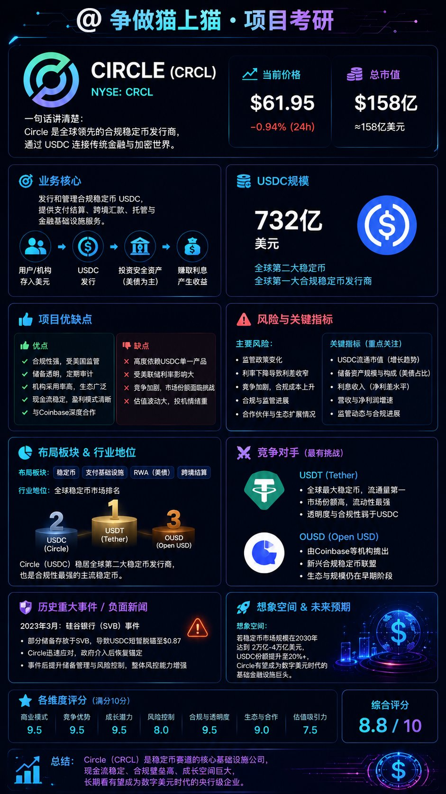

crcl是纯粹的，只是需要合理的进场时机。
Quote
Jul 2
Lately, the entire timeline is buzzing with $CRCL. If it drops a bit more or if no one’s talking about it, I might actually buy in. crcl is so pure—simplicity is the ultimate sophistication. @circle
Important things bear repeating three times:
crcl is so pure—simplicity is the
